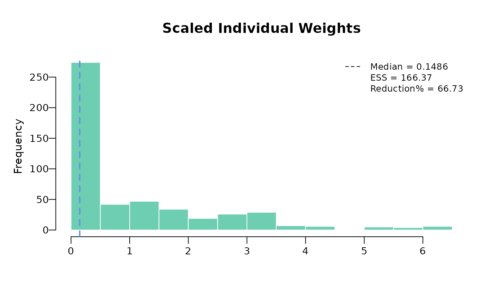

Preprocessing and Calculating Weights
2024-10-08
Source:vignettes/calculating_weights.Rmd
calculating_weights.RmdPreprocessing
Preprocessing IPD
This example reads in adsl_sat data and shows how
weights are calculated.
In this example scenario, age, sex, ECOG performance status, smoking status, and number of previous treatments have been identified as imbalanced prognostic variables and/or effect modifiers.
data("adsl_sat")
# Data containing the matching variables
adsl_sat <- adsl_sat %>%
mutate(SEX_MALE = ifelse(SEX == "Male", 1, 0)) %>%
mutate(AGE_SQUARED = AGE^2)
# Could use built-in function for dummizing variables
# adsl_sat <- dummize_ipd(adsl_sat, dummize_cols = "SEX", dummize_ref_level = c("Female"))
# Rename adsl as ipd
ipd <- adsl_sat
head(ipd)## USUBJID ARM AGE SEX SMOKE ECOG0 N_PR_THER SEX_MALE AGE_SQUARED
## 1 1 A 45 Male 0 0 4 1 2025
## 2 2 A 71 Male 0 0 3 1 5041
## 3 3 A 58 Male 1 1 2 1 3364
## 4 4 A 48 Female 0 1 4 0 2304
## 5 5 A 69 Male 0 1 4 1 4761
## 6 6 A 48 Female 0 1 4 0 2304Preprocessing aggregate data
There are two methods for specifying aggregate data. The first method
involves importing aggregate data via an Excel spreadsheet. Within the
spreadsheet, variable types such as mean, median, or standard deviation
are possible for continuous variables, while count or proportion are
possible for binary variables. Each variable should be suffixed
accordingly: _COUNT, _MEAN, _MEDIAN, _SD, or _PROP. Subsequently, the
process_agd function will convert counts into
proportions.
The second method entails defining a data frame of aggregate data in R. When using this approach, the _COUNT prefix should be omitted, and only proportions are permissible for binary variables. Other suffixes remain consistent with the first method.
Any missing values in binary variables should be addressed by adjusting the denominator to account for missing counts, i.e., the proportion equals the count divided by (N - missing).
# Through an excel spreadsheet
# target_pop <- data(agd)
# agd <- process_agd(agd)
# Second approach by defining a data frame in R
agd <- data.frame(
AGE_MEAN = 51,
AGE_SD = 3.25,
SEX_MALE_PROP = 147 / 300,
ECOG0_PROP = 0.40,
SMOKE_PROP = 58 / (300 - 5),
N_PR_THER_MEDIAN = 2
)How _SD prefix is handled
As outlined in NICE DSU TSD 18 Appendix D [1], balancing on both mean and standard deviation for continuous variables may be necessary in certain scenarios. When a standard deviation is provided in the comparator population, preprocessing involves calculating in the target population (i.e. aggregate data) using the variance formula . This calculated in the target population is then aligned with computed in the internal IPD.
How _MEDIAN prefix is handled
When a median is provided, IPD is preprocessed to categorize the variable into a binary form. Values in the IPD exceeding the comparator population median are assigned a value of 1, while values lower than the median are assigned 0. The comparator population median is replaced by 0.5 to adjust to the binary categorization in the IPD data. Subsequently, the newly formed IPD binary variable is aligned to ensure a proportion of 0.5.
Centering IPD
In the introduction vignette, we explain why centering the IPD
variables using aggregate data means is needed when calculating weights.
The function center_ipd centers the IPD using the aggregate
data means.
ipd_centered <- center_ipd(ipd = ipd, agd = agd)
head(ipd_centered)## USUBJID ARM AGE SEX SMOKE ECOG0 N_PR_THER SEX_MALE AGE_SQUARED
## 1 1 A 45 Male 0 0 4 1 2025
## 2 2 A 71 Male 0 0 3 1 5041
## 3 3 A 58 Male 1 1 2 1 3364
## 4 4 A 48 Female 0 1 4 0 2304
## 5 5 A 69 Male 0 1 4 1 4761
## 6 6 A 48 Female 0 1 4 0 2304
## AGE_CENTERED AGE_SQUARED_CENTERED SEX_MALE_CENTERED ECOG0_CENTERED
## 1 -6 -586.5625 0.51 -0.4
## 2 20 2429.4375 0.51 -0.4
## 3 7 752.4375 0.51 0.6
## 4 -3 -307.5625 -0.49 0.6
## 5 18 2149.4375 0.51 0.6
## 6 -3 -307.5625 -0.49 0.6
## SMOKE_CENTERED N_PR_THER_MEDIAN_CENTERED
## 1 -0.1966102 0.5
## 2 -0.1966102 0.5
## 3 0.8033898 -0.5
## 4 -0.1966102 0.5
## 5 -0.1966102 0.5
## 6 -0.1966102 0.5Calculating weights
We utilize the centered IPD and employ the
estimate_weights function to compute the weights. Prior to
executing this function, it’s essential to specify the centered columns,
i.e., the covariates to be utilized in the optimization process.
# list variables that are going to be used to match
centered_colnames <- c("AGE", "AGE_SQUARED", "SEX_MALE", "ECOG0", "SMOKE", "N_PR_THER_MEDIAN")
centered_colnames <- paste0(centered_colnames, "_CENTERED")
weighted_sat <- estimate_weights(
data = ipd_centered,
centered_colnames = centered_colnames
)
# Alternatively, you can specify the numeric column locations for centered_colnames
# match_res <- estimate_weights(ipd_centered, centered_colnames = c(14, 16:20))Following the calculation of weights, it is necessary to determine whether the optimization procedure has worked correctly and whether the weights derived are sensible.
The approximate effective sample size is calculated as: A small ESS, relative to the original sample size, is an indication that the weights are highly variable and that the estimate may be unstable. This often occurs if there is very limited overlap in the distribution of the matching variables between the populations being compared.
In this example, the ESS reduction is 66.73% of the total number of patients in the intervention arm (500 patients in total). As this is a considerable reduction, estimates using this weighted data may be unreliable.
weighted_sat$ess## [1] 166.3675Also, it is useful to visualize the weights using a histogram to check if there are any extreme weights. Scaled weights are weights that are relative to the original unit weights of each individual. Scaled weights are calculated as .
plot(weighted_sat)
# ggplot option is also available
# plot(weighted_sat, ggplot = TRUE, bin_col = "black", vline_col = "red")Another check would be to look at whether the weighted summary of covariates in internal IPD match the external aggregate data summary.
check_weights(weighted_sat, agd)## covariate match_stat internal_trial internal_trial_after_weighted
## 1 AGE Mean 59.850 51.00
## 2 AGE SD 9.011 3.25
## 3 SEX_MALE Prop 0.380 0.49
## 4 ECOG0 Prop 0.410 0.40
## 5 SMOKE Prop 0.320 0.20
## 6 N_PR_THER Median 3.000 2.00
## external_trial sum_centered_IPD_with_weights
## 1 51.00 0.0001
## 2 3.25 0.0125
## 3 0.49 0.0000
## 4 0.40 0.0000
## 5 0.20 0.0000
## 6 2.00 0.0000